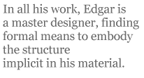

Stephen Edgar’s fifth volume, Lost in the Foreground, is a book of marvels, both technically and in the elegant, magisterial reach of its content.He is wonderfully inventive, and his complex rhyme schemes and forms are achieved with such precision and finesse that one can only conjecture as to how long each piece must have taken to become so lovingly and artfully realised.
The poems in this complex book are not always apprehended easily, for Edgar’s approach is to layer and extrapolate a set of ideas within a richly textured syntax. Only on rare occasions do his phrases and constructions disperse the content over too long a distance, resulting in loss of focus and displaced nuances. After many rereadings, I’m still not certain as to the contents or significance of “the box” in the poem “The Customs Officer”, nor how to position the figure of the customs officer metaphorically, or even literally. Similarly, “Incident at Grantley Manor”, an ingenious piece in which perspective is constantly being shifted and reiterated, took me several readings to “get” the proper angles. Now that I have, I appreciate Edgar’s structural ability.
A good part of Edgar’s strength is his architectonic flair, the way he moulds his thought and narratives into highly pleasing, organised forms. In all his work, Edgar is a master designer, finding formal means to embody the structure implicit in his material. I love the rich sensual cognisance Edgar brings to his subjects. Phrase by phrase, line by line, Edgar builds his work until it amplifies a panorama in an almost kaleidoscopic way. “Silk Screen”, a virtuoso piece, captures the changing colours and textures of late afternoon sunlight upon an estuarine landscape. The poem ranges across seventy-two lines, yet never slackens or fails in the resourcefulness of its depictions, each hue disclosed with subtle, masterful strokes. In “Arcadia” (in memory of Gwen Harwood), one of the most beautiful poems in the book, lines of six and four syllables play out the cycles of birth, death, beauty, pain and loss against the calm, repeating wavelets of Oyster Cove:
And that was your last wish:
If given back one day,
To go after the fish;
With death to lift away
From the shore and,
Borne up by sealight, flow
From the stilled land
In silence. It was so.
Edgar’s imagination is rich and vital. Many of the poems in this volume plumb exotic and fantastical scenarios. One of my favourites, “The Book of the Dead”, describes a place inhabited by prophetic flowers and trees with bliss-inducing sap. What happens to the indigenes by the end of the poem is as rich as any enduring fable or folk tale. Edgar also tackles scientific subjects such as the possibility of artificial intelligence replacing humans (“Would our death be their death of God?” and “Signs of Life”). Some poems wittily depict the corrupt world of corporate dominance, and there is a deeply moving poem (“Sun Pictorial”) about the disposable images of war. No matter what subject Edgar tackles, his method of apprehending and conveying that knowledge is an aesthetic one. This is a very enabling principle: it allows poetry and the poetic imagination a deep level of cognisance. Edgar’s range is large; whatever he turns his attention to, there is full exploration of its possibilities. His erudition is obvious, yet never paraded for its own sake. Edgar likes to operate at full sensory and intellectual stretch. He can meander, but this discursiveness is immensely worthwhile, and part of this success is due to the remarkable endings he achieves. How he is able to keep so many balls in the air, and land them all successfully, is amazing. So much comes together within the last few lines, making his poems deeply satisfying both technically and emotionally. “Complete Works” begins with a baroque depiction of thunderheads, and progresses to a more naturalistic picture of a wattlebird at a window, then on to contemplation of intricacies in an aesthetic and physical backdrop, in which the speaker asks: “Who could have guessed / This world it’s flying through was once Shakespeare’s?” The poem continues: “Above their beds breeds in the sky / Vast Yggdrasils, / And earthly trees in darkness, bird-endowed, / Attempt to memorize a wind that spills / From the salt water, making the same cry.” The poem ends with a resonant rhetorical question: “Simple as clouds and birds, complete as Shakespeare’s works?” In “Midas”, Edgar’s narrative ability is second to none. It begins with a compelling opening, indicative of the visionary depth so much of his work achieves:
Not literally gold — the apple plucked,
And in that gilded gesture not just weighing
His palm down with its glittering bullion, but
Crisping too from the severed stem, its sap
Already foil, back up and up the branch
An aureate rust, or frost, until the tree
Entire shook shimmering under the breeze
And tinkled like a fragile instrument.
The story then unfolds in such a richness of detail and texture as to make it unforgettable.
Lost in the Foreground is one of the most accomplished and deeply satisfying books of poetry published in recent years. Stephen Edgar must be one of the most masterful poets writing in English today.
[ This review was first published in Australian Book Review, 2003 ]
Judith Beveridge has published three books of poetry all of which have won major prizes: The Domesticity of Giraffes (Black Lighting Press, 1987); Accidental Grace (UQP, 1996); and Wolf Notes (Giramondo Publishing, 2003). She is the poetry editor of Meanjin. In 2005 she was awarded the Philip Hodgins Memorial Medal for excellence in literature. She has edited UQP’s The Best Australian Poetry 2006. She teaches poetry at postgraduate level at the University of Sydney. Her fourth volume, Storm and Honey, will be published in 2009 by Giramondo.